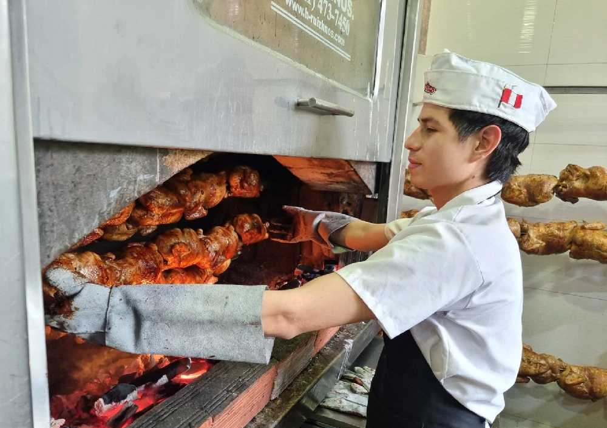

Nuestra historia comienza con la simple idea de llevar a tu mesa un plato tradicional, lleno de sabor y preparado con el mayor cuidado. Desde el primer día, nos comprometimos a ofrecerte pollos a la brasa jugosos, sabrosos y cocinados con esmero, tal como lo haría una familia en su hogar. Con el paso de los años, nuestra pasión por la cocina y el respeto por la tradición han hecho de Pollería Suárez un lugar de referencia para los amantes del buen comer.
Nosotros
En Pollería Suárez, nos apasiona ofrecerte una experiencia única, llena de sabor, tradición y calidad. Desde nuestra fundación, nos hemos dedicado a preparar el mejor pollo a la brasa, utilizando las técnicas más auténticas y los ingredientes frescos y de la más alta calidad.
Nuestra Historia
Compromiso con la calidad
La calidad es la clave de nuestro éxito. Usamos solo pollos frescos de la más alta calidad, marinados en una mezcla especial de hierbas y especias que le dan ese sabor inconfundible que nos distingue. Nuestros expertos cocineros se encargan de preparar cada pollo con la técnica perfecta, asegurando que cada pieza quede perfectamente dorada y jugosa.
El secreto de Nuestros Pollos
El secreto de nuestro pollo a la brasa está en nuestra receta única, transmitida de generación en generación. Además, nuestra parrilla de carbón y el toque de leña aseguran un sabor ahumado inigualable. No solo cocinamos, creamos una experiencia gastronómica que te invita a disfrutar cada bocado.